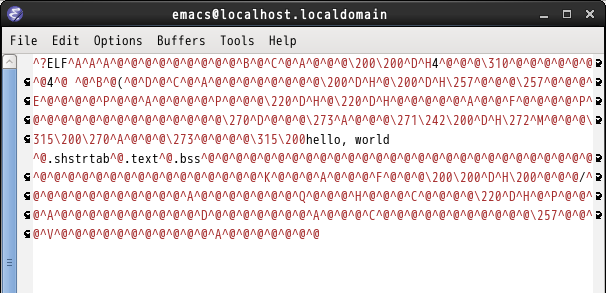

補足：ファイル間の関係
ファイルの種類がたくさん出てきたので少し整理しておこう。 下図は，ファイル（長方形）と変換コマンド（楕円）の関係を表している（説明していないコマンドも一部混じっている）。

テキストファイルとバイナリファイル
上図の破線の長方形はバイナリファイルを表している。
例えば，実行可能ファイル a.out（hello.hexから生成したもの）をEmacsで開いてみよう。

バイナリファイルは人間が読み書きすることを意図していないファイルなので，テキストエディタでは開けない（あるいは開いてもぐちゃぐちゃな表示になる）。
Emacsではなくて，xxdコマンドを使って中身を見てみよう。xxdコマンドは，-r -pオプションではなく-g1オプションを付けて実行すると，ファイルの中身を16進数で表示する。
$ xxd -g1 a.out
0000000: 7f 45 4c 46 01 01 01 00 00 00 00 00 00 00 00 00 .ELF............
0000010: 02 00 03 00 01 00 00 00 80 80 04 08 34 00 00 00 ............4...
0000020: c8 00 00 00 00 00 00 00 34 00 20 00 02 00 28 00 ........4. ...(.
0000030: 04 00 03 00 01 00 00 00 00 00 00 00 00 80 04 08 ................
0000040: 00 80 04 08 af 00 00 00 af 00 00 00 05 00 00 00 ................
0000050: 00 10 00 00 01 00 00 00 00 10 00 00 00 90 04 08 ................
0000060: 00 90 04 08 00 00 00 00 00 01 00 00 06 00 00 00 ................
0000070: 00 10 00 00 00 00 00 00 00 00 00 00 00 00 00 00 ................
0000080: b8 04 00 00 00 bb 01 00 00 00 b9 a2 80 04 08 ba ................
0000090: 0d 00 00 00 cd 80 b8 01 00 00 00 bb 00 00 00 00 ................
00000a0: cd 80 68 65 6c 6c 6f 2c 20 77 6f 72 6c 64 0a 00 ..hello, world..
00000b0: 2e 73 68 73 74 72 74 61 62 00 2e 74 65 78 74 00 .shstrtab..text.
-- (中略) --
0000150: af 00 00 00 16 00 00 00 00 00 00 00 00 00 00 00 ................
0000160: 01 00 00 00 00 00 00 00 ........左端の8桁の16進数は，ファイルの先頭から何バイト目かを表している。その次の2桁×16個の16進数がファイルの中身16バイト分だ。その右側は，その16バイトを文字コードと解釈したときの文字を示している（対応する文字がない場合は . と表示）。
第00000080バイトから始まる47バイトが，hello.hexに記述されていた機械語プログラムだ。
h.binの中身も見てみよう。こちらは純粋に，hello.hexに記述されていた47バイトをそのまま格納したファイルだ。
$ xxd -g1 h.bin
0000000: b8 04 00 00 00 bb 01 00 00 00 b9 a2 80 04 08 ba ................
0000010: 0d 00 00 00 cd 80 b8 01 00 00 00 bb 00 00 00 00 ................
0000020: cd 80 68 65 6c 6c 6f 2c 20 77 6f 72 6c 64 0a ..hello, world.hello.hexとh.binはどう違うのか?
hello.hexは，「b」「8」「空白」「0」「4」「空白」…という文字の並びを格納したファイルだ。hello.hexの中身をxxdコマンドで見てみればよくわかる。
$ xxd -g1 hello.hex
0000000: 62 38 20 30 34 20 30 30 20 30 30 20 30 30 20 62 b8 04 00 00 00 b
0000010: 62 20 30 31 20 30 30 20 20 30 30 20 30 30 20 62 b 01 00 00 00 b
0000020: 39 20 61 32 20 38 30 20 30 34 20 30 38 20 62 61 9 a2 80 04 08 ba
0000030: 0a 30 64 20 30 30 20 30 30 20 30 30 20 63 64 20 .0d 00 00 00 cd
0000040: 38 30 20 62 38 20 30 31 20 20 30 30 20 30 30 20 80 b8 01 00 00
0000050: 30 30 20 62 62 20 30 30 20 30 30 20 30 30 20 30 00 bb 00 00 00 0
0000060: 30 0a 63 64 20 38 30 20 36 38 20 36 35 20 36 63 0.cd 80 68 65 6c
0000070: 20 36 63 20 36 66 20 32 63 20 20 32 30 20 37 37 6c 6f 2c 20 77
0000080: 20 36 66 20 37 32 20 36 63 20 36 34 20 30 61 0a 6f 72 6c 64 0a.hello.hexの中身は，「bの文字コード(62)」「8の文字コード(38)」「空白の文字コード(20)」…のような，表示可能・打鍵可能な文字の文字コードの列だ。このような文字だけからなるファイルをテキストファイルと言う。
C言語やJavaのソースファイルもアセンブリ言語プログラムファイルもすべてテキストファイルだ。
$ xxd -g1 hello.s
0000000: 09 73 65 63 74 69 6f 6e 09 2e 74 65 78 74 0a 09 .section..text..
0000010: 67 6c 6f 62 61 6c 09 5f 73 74 61 72 74 0a 5f 73 global._start._s
0000020: 74 61 72 74 3a 0a 09 6d 6f 76 09 65 61 78 2c 20 tart:..mov.eax,
0000030: 34 0a 09 6d 6f 76 09 65 62 78 2c 20 31 0a 09 6d 4..mov.ebx, 1..m
0000040: 6f 76 09 65 63 78 2c 20 6d 73 67 0a 09 6d 6f 76 ov.ecx, msg..mov
0000050: 09 65 64 78 2c 20 6d 73 67 6c 65 6e 0a 09 69 6e .edx, msglen..in
0000060: 74 09 30 78 38 30 0a 09 6d 6f 76 09 65 61 78 2c t.0x80..mov.eax,
0000070: 20 31 0a 09 6d 6f 76 09 65 62 78 2c 20 30 0a 09 1..mov.ebx, 0..
0000080: 69 6e 74 09 30 78 38 30 0a 6d 73 67 3a 09 64 62 int.0x80.msg:.db
0000090: 09 22 49 27 6d 20 66 69 6e 65 2e 22 2c 20 30 78 ."I'm fine.", 0x
00000a0: 30 61 0a 6d 73 67 6c 65 6e 3a 09 65 71 75 09 24 0a.msglen:.equ.$
00000b0: 20 2d 20 6d 73 67 0a - msg.◆演習1.1-7
- xxdコマンドを使って，
a.out,hello.bin,hello.hex,hello.sの中身を確認しなさい。
（ファイルはすべて1バイトの情報の並びだが，テキストファイルは表示可能文字のみ含んでおり，バイナリファイルはそのような制限がない，ということを確認しなさい。） hello.hexとh.binはどちらも同じ「47バイトの情報列」を表すことを目的としている。それぞれの利点（あるいは適切な使いみち）を考えなさい。- 以下の各ファイル形式を，テキストファイルとバイナリファイルに分類しなさい。
JPEG, EPS, ZIP, HTML, docx, PDF, TeX, DVI (TeXの出力ファイル)
実行可能ファイル
上で見たように，実行可能ファイルの中身は機械語プログラムそのものだけではなく，それ以外の付加情報を含んでいる。 この付加情報は，OSがファイルの中身を主記憶装置にコピーして実行を開始する際に用いられる。
i386用Linuxにおける実行可能ファイル形式は Executable and Linking Format (ELF) と呼ばれる。
i386用Linuxでは，アセンブラの出力である .o ファイル（オブジェクトファイル）もELF形式だが，格納している情報が異なる（.o ファイルは実行に必要な付加情報を持っていない）。一方，.o ファイルは他の .o ファイルと結合 (link) できる（.o ファイルの結合は後の章で扱う）。